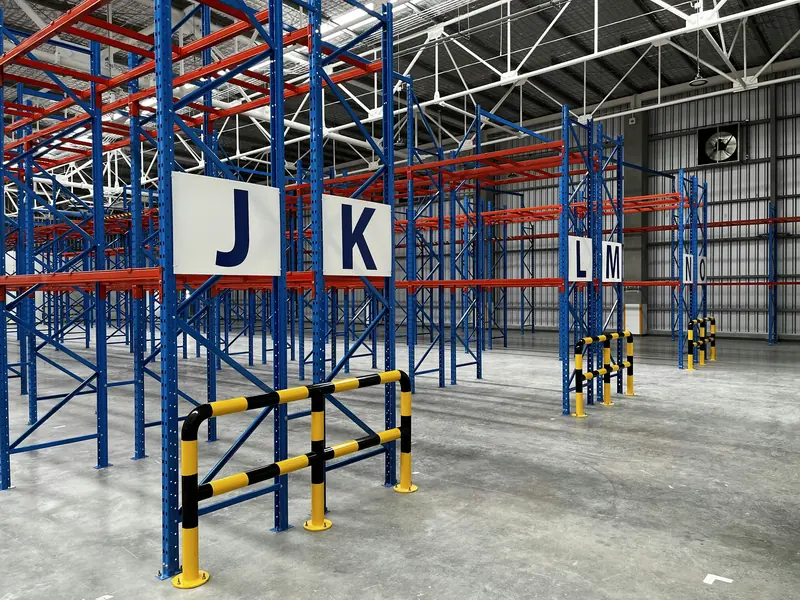

Centro de distribución reorganizado por pasillos
Bodega de consumo masivo con producto en piso. Se propone rack selectivo con pasillos señalizados por letra y defensas en cabeceras.
- Sistema
- Rack selectivo
- Carga
- Pallets mixtos
- Alcance
- Diseño, suministro y montaje